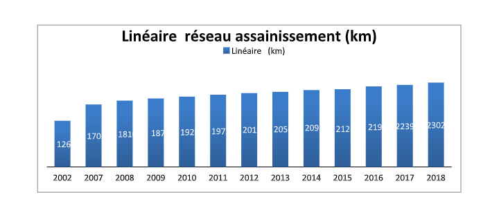
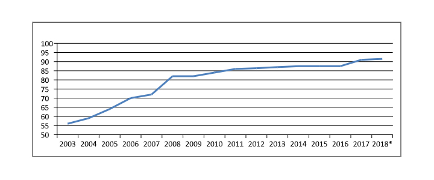
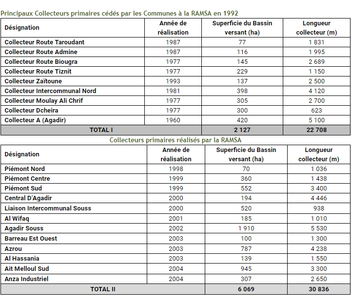
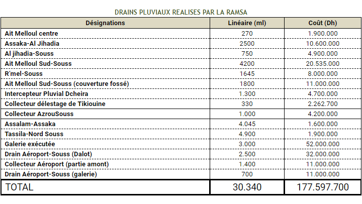

Assainissement Liquide
Réseau de collecte des eaux usées et pluviales
Réseau
Le système de collecte des eaux usées est majoritairement de type unitaire et fonctionne en mode gravitaire à l’exception du secteur touristique et balnéaire situé en bordure de la plage d’Agadir qui est desservi par un réseau de type séparatif équipé de stations de pompage relevant les eaux usées vers le collecteur principal de la ville. Le linéaire total du réseau fin 2018 est de 2 307 Km.
- Le réseau primaire d’une longueur de 240 Km est constitué de collecteurs de différentes natures : circulaires (section supérieure à 1000mm), ovoïdes (de T100 à T240), et dalots (section comprises entre 0,75 x 2,00 et 4,00 x 2,40 m)
- Le réseau secondaire d’une longueur de 532 Km est constitué de canalisations circulaires de sections allant de 600 à 1000 mm
- Le réseau tertiaire d’une longueur de 1535 Km est constitué de canalisations circulaires de sections allant de 300 à 500 mm.
Le linéaire du réseau a connu une évolution importante suite aux opérations de viabilisation menées par les différents promoteurs ainsi que les travaux d’extensions du réseau réalisés par la RAMSA dans l’objectif de généraliser la couverture en réseau dans son périmètre d’action. Le diagramme ci-après illustre cette évolution (linéaire en Km) suivant les années :
Le taux de raccordement au réseau d’assainissement est 91,5 %. Les réalisations de la RAMSA ont permis une amélioration nette du taux de raccordement qui est passé de 56% en 2003 à 91,5 % actuellement :
  © RAMSA
Realisation 2019